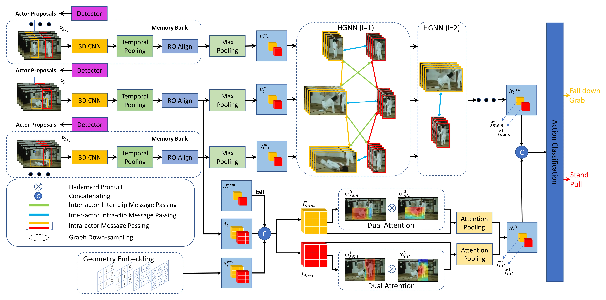
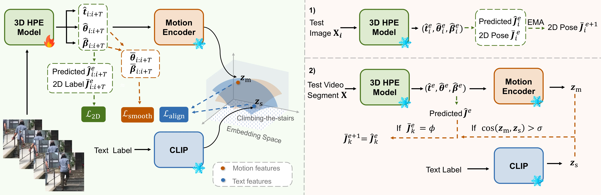
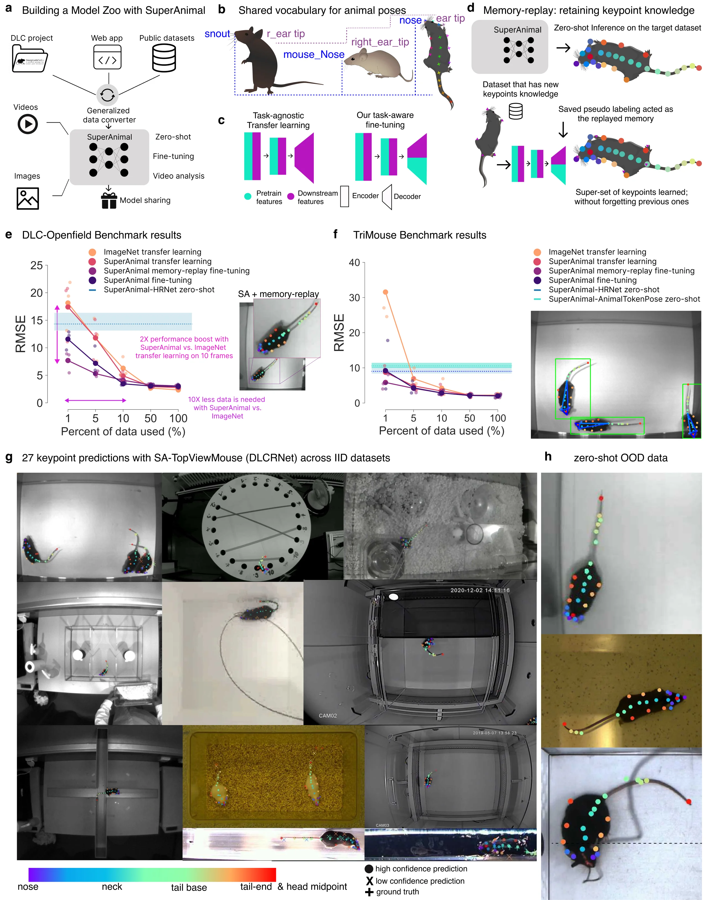
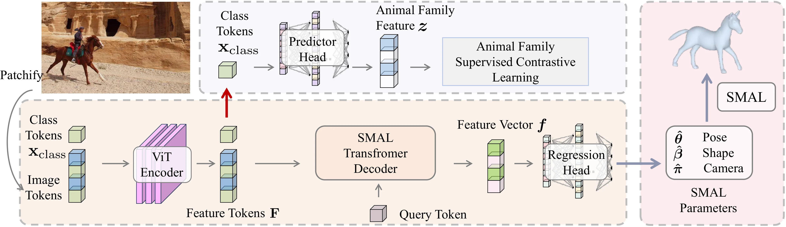
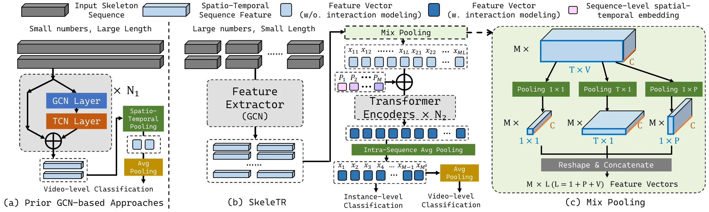
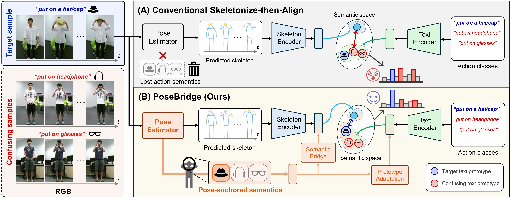

个体特定动作检测
在系列四中我们看到，视频基础模型（VFM）已经把动作检测推到了很高精度：InternVideo2 在 THUMOS14 上达到 72.0 mAP，OpenTAD 在 ActivityNet 上达到 39.51%。但这些方法都隐含一个假设——所有演员都是"无差别"的。检测器不关心"谁在做动作"，只关心"发生了什么动作"。
这个假设在人体动作识别上或许可以接受（人体结构高度一致），但在以下场景中它开始崩塌：
- 多宠物家庭：两只猫在同一个画面中，一只在呕吐（需要告警），另一只在舔毛（正常行为）。通用检测器可能把"呕吐"错误关联到健康的猫，因为模型不区分个体身份
- 个性化医疗：帕金森患者的步态评估需要基于该患者的基线姿态，而非人群平均。通用模型给出的"正常行走"评分对个体患者毫无参考价值
- 运动员分析：俄亥俄州立大学的研究证明，视频模型可以从运动特征中识别球员身份——即每个运动员有独特的 identity-specific motion signatures（身份特定运动签名）#CO5。这意味着动作执行方式本身就编码了身份信息
- 动物行为学：同一物种的不同个体在执行同一行为时，表现可能截然不同。动物行为综述指出"追踪多个外观相同的个体具有挑战性"#Eddy et al., 2023，而现有系统大多只关注物种级别的行为分类，不区分个体
更关键的是，涉及人与人交互的动作（如"握手""推搡""拥抱"）提升最大——AVA 三大类中，Person Interaction 类别提升达 +7.0% mAP。这正是因为身份混淆会严重影响交互类动作的判断：当红框中的 actor 被标为"pull"，但黄框中的干扰 actor 区域与其重叠时，模型误判为"grab"。

但 IGMN 只是在特征空间中编码身份（通过 actor 框的跟踪 ID），没有真正回答一个更根本的问题：能不能先"认识"一个个体（建立它的 3D 模型、骨骼结构），再基于这个个体模型做后续所有动作检测？
这正是本文的核心调研问题。我们系统检索了 arXiv、Nature、CVPR、ICCV、ACM MM、NeurIPS、AAAI、SIGGRAPH 等来源的 19 篇核心论文，发现：这个完整的双阶段范式尚未形成独立的命名研究方向，但多条技术线各自覆盖了范式的关键组件。更重要的是，我们发现这个范式与机器人领域的运动重定向（Motion Retargeting）高度同构——先从观测中"缝合"（stitching）出个体的运动学表征，再将通用动作识别能力"重定向"（retargeting）到该个体。本文将这些分散的技术线组织为统一的 Stitching-Retargeting 技术地图，定义这个新范式，并指出空白区域和可能的端到端架构。
2.1 范式定义
我们将"个体特定动作检测"（Instance-Specific Action Detection）定义为以下 Stitching-Retargeting pipeline（后文也称为"双阶段范式"）：
flowchart LR
subgraph S1["Stitching 阶段: 个体表征缝合"]
direction TB
R1["参考图/视频"]
P1["姿态估计
DeepLabCut / SuperAnimal"]
P2["3D 重建
SMPL / AniMer"]
P3["测试时适配
TTA-Pose / Online TTA"]
P4["个性化运动
PersonaAnimator"]
R1 --> P1
R1 --> P2
P1 --> P3
P1 --> P4
end
subgraph N["规范化层"]
N1["骨架规范化
ViA / MoCaNet"]
end
subgraph S2["Retargeting 阶段: 动作识别重定向"]
direction TB
A1["骨架动作识别
SkeleTR / SkateFormer"]
A2["身份感知 TAD
IGMN"]
A3["零样本泛化
PoseBridge"]
A4["神经重定向
NMR-style (未来)"]
A1 --> A2
A1 --> A3
A1 --> A4
end
S1 -->|"个体模型"| N
N -->|"规范表征"| S2
阶段 1（Stitching）：个体表征缝合——从参考图片或视频中建立个体模型。可以是一套关键点骨架（2D/3D）、一个参数化体型模型（如 SMAL/SPL），或者一个经 test-time adaptation 微调后的个体特定姿态估计器。这一阶段的目标是让模型"认识"这个特定的个体——知道它的关节在哪、体型如何、运动习惯是什么。在 stitching 的视角下，这一阶段就是从分散的观测中拼装出一个连贯的个体表征。
阶段 2（Retargeting）：动作识别重定向——基于阶段 1 建立的个体模型做动作检测。利用骨架序列、身份编码或零样本泛化来识别该特定个体的动作。这一阶段的关键挑战是：如何在多人/多动物场景中保持个体身份的一致性，并利用个体先验增强动作识别精度。在 retargeting 的视角下，这一阶段就是将通用动作识别能力映射到该个体的动作空间。
2.2 现有技术在范式中的位置
| 范式组件 | 代表工作 | 覆盖程度 | 关键数据 | arXiv ID |
|---|---|---|---|---|
| 个体姿态估计 | SuperAnimal, APT-36K, DiffPose-Animal | ✅ 成熟（动物） | SuperAnimal 45+ 物种, 微调效率 10-100× | 2203.07436, 2206.05683, 2508.08783 |
| 3D 个体重建 | AniMer | ⚠️ 新兴 | Animal3D AUC=88.9, PA-MPJPE=80.4mm | 2412.00837 |
| 测试时个体适配 | TTA-Pose, Online TTA | ⚠️ 场景级（非个体级） | TTA-Pose 3DPW PA-MPJPE 47.2mm (↑12.3%) | 2502.10724, 2503.11194 |
| 身份感知 TAD | IGMN | ⚠️ 仅特征空间编码 | AVA v2.1 mAP 30.2%, 46/60 类受益 | 2108.11559 |
| 两阶段骨架 AR | SkeleTR | ✅ 最接近完整范式 | AVA +7.8%, 0.81M params, 336 clip/s | 2309.11445 |
| 零样本个体泛化 | PoseBridge | ⚠️ 动作级（非个体级） | Kinetics PURLS 超越 SOTA 13.3-17.4 分 | 2605.11497 |
| 动物行为 pipeline | DeepLabCut, BCST-GCN, AnimalMotionCLIP | ✅ 实用但无身份感知 | DLC 仅需 ~200 帧标注; AK mAP=74.63% | 2301.06187, 2505.00569 |
| 骨架规范化（retarget 前置） | ViA, MoCaNet | ⚠️ 动作级（非个体级） | ViA: Toyota Smarthome SOTA; MoCaNet: AAAI 2022 | 2206.11278, hal-03906649 |
| 个性化运动迁移 | PersonaAnimator | ⚠️ 生成级（非检测级） | "one person, one style" 范式 | 2508.19895 |
| 神经运动重定向 | NMR (机器人) | ⚠️ 机器人域（非 AR 域） | ~30K 配对数据, Transformer 映射 | 2603.22201 |
| 端到端完整系统 | — | ❌ 空白 | — | — |
2.3 核心发现
完整的双阶段系统尚不存在
没有任何一篇已发表论文将"从参考图重建个体 3D 模型"作为动作检测的前置步骤形成端到端流程。各组件技术已各自成熟——SuperAnimal 覆盖 45+ 物种、IGMN 在 AVA 上突破 30% mAP、SkeleTR 以 0.81M 参数实现 SOTA——但将它们组装为完整系统是一个尚未被充分探索的研究方向。本文提出三种可能的端到端架构（见 Part 6），为这一方向的后续研究提供路线图。
从技术地图可以清晰地看到：阶段 1 的组件（姿态估计、3D 重建、TTA）各自有成熟的工作，阶段 2 的组件（骨架 AR、身份感知 TAD、零样本泛化）也有代表性方法。但两个阶段之间的"桥接"是缺失的——没有论文系统性地研究"个体模型如何增强动作检测"这个问题。这正是本文要定义和填补的空白。
2.4 Stitching-Retargeting：来自机器人领域的理论透镜
仔细审视上述双阶段范式，可以发现它与机器人领域的运动重定向（Motion Retargeting）管线高度同构。在机器人学中，运动重定向指的是将人体运动捕获数据转移到机器人身体上的过程——先从观测中构建人体运动学模型（如 SMPL 参数化模型），再将其映射到机器人的关节空间 #Zhao et al., 2026。这个过程可以被拆解为两个清晰的原语：
Stitching（缝合）——从分散的观测中拼装出一个连贯的个体表征。在 3D 人体重建中，"texture stitching" 指从多视角图像中拼合完整纹理 #Alldieck et al.；在模型拼接文献中，"model stitching" 指将不同模型的早期层和后期层通过轻量适配层连接起来 #Lenc & Vedaldi. 在个体特定动作检测的语境中，stitching 就是阶段 1 的个体建模：DeepLabCut 用 ~200 帧标注"缝合"出一个个体特定的姿态估计器；SuperAnimal 用跨物种预训练 + 少样本微调"缝合"出一个物种-个体双层模型；AniMer 用 ViT 编码器 + 扩散合成数据"缝合"出动物的姿态+形状联合表征。
Retargeting（重定向）——将一种通用能力映射到一个特定目标域。在机器人学中，是将人体运动重定向到机器人运动学 #Zhao et al., 2026；在角色动画中，是将运动在不同骨架结构间迁移 #Villegas et al., 2021；在骨架动作识别中，ViA 将不同视角的 3D 运动 retarget 到规范骨架以实现视角不变性 #Bilen et al., 2023。在个体特定动作检测的语境中，retargeting 就是阶段 2 的动作检测：SkeleTR 将单人格架 AR retarget 到多人场景；IGMN 将通用 TAD retarget 为身份感知 TAD；PoseBridge 将已见类的动作知识 retarget 到未见类。
| 维度 | 机器人运动重定向 | 个体特定动作检测 |
|---|---|---|
| 源域 | 人体运动捕获（SMPL 序列） | 个体参考图像/视频 |
| Stitching | 从视频构建 SMPL 人体模型 | 从参考帧构建个体骨架/3D 模型 |
| 目标域 | 机器人关节空间（不同运动学） | 该个体的动作空间（不同运动风格） |
| Retargeting | SMPL → Robot 关节映射 | 通用 AR → 个体特定 AR |
| 核心挑战 | 运动学差异、物理约束、自碰撞 | 个体差异、身份混淆、少样本 |
| 代表性方法 | GMR (IK 优化)、NMR (神经映射) | SkeleTR (两阶段解耦)、IGMN (身份图) |
这个类比不仅是表层的形似。机器人重定向面临的核心难题——非凸性（IK 优化的局部最优问题）和物理可行性约束（关节极限、自碰撞）——在个体特定动作检测中都有对应物：个体运动空间的非凸性（同一动作的不同个体执行方式可能截然不同，使得简单的特征匹配陷入局部最优），以及个体可行性约束（某些动作对于特定体型/物种在物理上不可能，如猫不会“挥手”）。NMR #Zhao et al., 2026 用数据驱动的神经映射替代 IK 优化来规避非凸性，这启示我们：个体特定 AR 也可能从显式的神经 retargeting 层中受益，而非依赖隐式的特征空间对齐。
另一个关键连接点是 PersonaAnimator #Qian et al., 2025 提出的 "one person, one style"范式——将每个个体的运动风格视为一个独立的风格类别，通过 Semantic-Aware Personalized Motion Transfer (SA-PMT) 模块在保留运动内容的同时学习个体特定的运动特征。这与个体特定动作检测的终极目标——"认识这只猫的运动风格，再基于该风格识别它的动作"——在方法论上高度一致。PersonaAnimator 证明了从无约束视频中直接学习个性化运动模式是可行的，而无需昂贵的运动捕获数据。
将双阶段范式重新命名为 Stitching-Retargeting 范式，不仅是为了借用机器人领域的成熟理论框架来组织现有工作，更重要的是揭示一个被忽视的研究方向：显式的 retargeting 层。正如 NMR 在人体→机器人之间插入了一个 Transformer-based retargeting 网络，个体特定动作检测也可能需要一个显式的 retargeting 模块——将通用动作表征映射到个体特定的动作空间——而非仅仅在特征空间中隐式编码身份。后续各 Part 将在 Stitching-Retargeting 框架下重新审视现有工作。
3.1 人体姿态：从通用模型到场景适配
3D 骨架动作识别是当前最成熟的技术线 #Zhang et al., 2025。根据 2025 年的综述，骨架动作识别已发展出八大架构族——RNN、CNN、GCN、Transformer、Hybrid、Mamba、LLM-Assisted、Generative——在 NTU RGB+D 60 上 GCN/Transformer 方法已达 93.6%/97.8% Top-1。标准做法是四模态融合：Joint、Bone、Joint Motion、Bone Motion 分别训练后取平均。GCN 图构建已从固定拓扑（ST-GCN 的 3-part 邻接矩阵）演进到动态拓扑（2s-AGCN 的自适应邻接矩阵）再到高阶拓扑（Hyper-GNN 的超图）。Transformer 方面，SkateFormer 将关节和帧按四种骨骼-时序关系分区，以仅 2.03M 参数实现 92.6% NTU X-Sub60，单模态即可匹敌多模态集成 #Li et al., 2024。
但所有这些方法都假设输入骨架来自训练分布内的场景。当通用姿态模型面对 in-the-wild 视频时，域差异会导致严重失效：预训练 HMR 在 3DPW 上 MPJPE 高达 230.3mm，PA-MPJPE 123.4mm。
TTA-Pose #Li et al., 2025（ICML 2025）首次引入语义感知运动先验来解决这个问题。其核心洞察是：知道"在做什么动作"可以极大缩小 3D 姿态的解空间。具体方法是用 GPT-4o 为视频片段生成动作标签（如 "walking", "climbing stairs"），然后在 MotionCLIP 的运动-文本对齐嵌入空间中约束 3D 预测：
其中语义对齐损失 $\mathcal{L}_{\text{align}} = 1 - \text{sim}(\mathbf{s}_i, \hat{\boldsymbol{\varphi}}'_{i:i+T})$，利用 MotionCLIP 的余弦相似度衡量预测运动与文本标签的对齐程度。GPT-4o 标签准确率达 96.4%，即使 3.6% 的标签错误，MPJPE 仍从 213.8 降至 92.2（正确标签降至 83.7），因为语义对齐是正则项而非硬约束。最终在 3DPW 上将 PA-MPJPE 从 53.8mm 降至 47.2mm（提升 12.3%），在 3DHP 上从 74.4mm 降至 65.1mm（提升 12.5%）。

但这仍然是场景级适配，不是个体级。TTA-Pose 适配的是"这个视频/场景中的运动模式"，而非"这个特定个体的运动风格"。要做到"认识这只猫"，需要更进一步的个体建模——这正是动物姿态估计和 3D 重建要解决的问题。
3.2 动物姿态估计：跨物种的挑战
动物姿态估计比人体更难：物种间形态差异巨大（猫 vs 蛇 vs 鸟），标注数据极度稀缺。四条技术路线正在并行推进：
| 方法 | 核心思想 | 数据规模 | 关键指标 | 年份/来源 |
|---|---|---|---|---|
| SuperAnimal | 统一关键点空间 + 记忆回放 | 45+ 物种 | 微调数据效率 10-100× | 2024, Nature Commun. |
| APT-36K | 大规模姿态+跟踪基准 | 30 物种 / 2400 视频 / 36K 帧 | 跨域泛化评测 | NeurIPS 2022 |
| DiffPose-Animal | LLM 条件引导扩散去噪 | AP-10K / APT-36K | AP=73.97, AP50=95.55 | 2025 |
| DeepLabCut | 迁移学习 + 用户标注微调 | 用户自定义 | 仅需 ~200 帧标注, 520 Hz 推理 | 2018, Nature Neuro. |

SuperAnimal #Ye et al., 2022 的范式最值得注意：它训练了一个覆盖 45+ 物种的通用姿态基础模型，通过统一关键点空间（generalized data converter）和记忆回放（memory replay）解决跨物种数据不平衡问题。用户拿到预训练模型后，只需标注少量目标物种/个体的数据即可微调——这正是"阶段 1"的产品化实现。其数据效率比传统迁移学习方法高 10-100 倍，支持 ResNet-50 和 MobileNetV2 两种 backbone，后者可直接在边缘设备上运行。
DiffPose-Animal #Li et al., 2025b 代表了最新进展：将姿态估计重构为 LLM 条件引导的扩散去噪过程，用文本描述（如"猫，侧面视角"）引导生成合理的关键点分布。在 AP-10K 上 AP 达到 73.97，在 AnimalPose 上 AP 达到 73.77，均超过 HRNet 基线。这种语义条件注入方式为少样本/零样本个体动作检测提供了新的条件化思路。
DeepLabCut #Eddy et al., 2023 虽然技术较老，但它是目前最接近"先认识个体，再做行为分析"范式的实际工具。其工作流为：(1) 用户对特定动物个体的少量帧（~200 帧）标注关键点；(2) 基于 ImageNet 预训练的 ResNet 迁移学习微调得到个体特定的姿态估计器；(3) 用该估计器做持续视频流的关键点提取；(4) 基于关键点序列做行为分类（如 B-SoiD 的 UMAP+HDBScan 聚类，SimBA 的 Random Forest）。这本质上就是一个双阶段系统，只是阶段 1 是 2D 而非 3D，且阶段 2 使用手工特征（关键点速度、角度、距离）而非深度模型。
3.3 3D 个体重建：从姿态到体型
AniMer #Ren et al., 2024（CVPR 2025）是目前唯一同时建模动物姿态 + 形状的工作。它使用 ViT 编码器 + 科属对比学习（family-aware contrastive learning），在多物种上学习 SMAL 参数化体型模型。引入扩散合成数据 CtrlAni3D（~10K 图像）扩充 3D 标注后，总训练集达 41.3K 图像。在 Animal3D 基准上 AUC 达到 88.9，PCK@HTH = 89.5，PA-MPJPE = 80.4mm。在分布外数据 Animal Kingdom 上 AUC 达到 82.9，比 HMR2.0 高 5.6 个点。

这意味着 AniMer 不仅知道"这只猫的关节在哪"，还知道"这只猫有多胖、腿有多长"——这为阶段 2 的动作检测提供了更强的个体先验。其科属对比学习策略（同一科属的动物形状拉近，不同科属推远）可自然迁移到个体对比学习：同一个体的不同帧拉近，不同个体推远。但目前还没有工作将 AniMer 的 3D 重建接入下游动作识别——这是本文识别的一个明确空白。
3.4 测试时个体适配：在线微调
Online TTA for 3D Pose #Chen et al., 2025 提出了更轻量的方案：不需要预先建立个体模型，而是在推理时逐帧自适应。其核心是三步适应策略：(1) 自适应聚合——跨视频初始化，利用历史视频的运动先验；(2) 两阶段优化——先优化全局参数再微调个体参数，限制误差传播；(3) 局部增强——利用高置信样本辅助低置信样本。在仅使用估计 2D 姿态（OpenPose）的条件下，MPJPE 达到 101.3mm，比 DynaBOA 的 138.5mm 改善 18.0%。
个体适配的三种范式对比
离线注册（DeepLabCut）：标注 200 帧 → 微调 → 固定模型。精度高但需要前期投入，适合长期监控同一个体。
少样本微调（SuperAnimal）：10-50 帧标注 → 快速适配。平衡精度和效率，适合产品化场景。
在线自适应（Online TTA）：零标注 → 逐帧微调。无前期投入但精度有上限，适合临时部署或隐私敏感场景。
3.5 实验配置对比
| 方法 | 数据集 | Backbone | 训练数据 | 推理速度 | 硬件 |
|---|---|---|---|---|---|
| TTA-Pose | 3DPW / 3DHP / EgoBody | HMR / HMR2.0 | Human3.6M | 107.6 ms/帧 | ❌ 未披露 |
| Online TTA | 3DPW / Human3.6M | ST→3D lifting | Human3.6M | ❌ 未披露 | ❌ 未披露 |
| SuperAnimal | 6 个姿态基准 | ResNet-50 / MobileNetV2 | 45+ 物种联合 | 520 Hz (DLC) | ❌ 未披露 |
| DiffPose-Animal | AP-10K / APT-36K | HRNet-W32 | AP-10K 3-split | ❌ 未披露 | ❌ 未披露 |
| AniMer | Animal3D / CtrlAni3D / AK | ViT | 41.3K 图像 | ❌ 未披露 | ❌ 未披露 |
注：多数论文未完整披露硬件配置，这反映了该领域在实验可复现性方面的不足。
4.1 DeepLabCut 范式：个体标注 → 微调 → 个体模型
如 Part 3 所述，DeepLabCut 是目前最接近"先认识个体，再做行为分析"范式的实际工具。动物行为综述 #Eddy et al., 2023 系统梳理了从姿态到行为的完整 pipeline，揭示了三种主要范式：
| Pipeline 类型 | 处理步骤 | 标注需求 | 发现新行为 | 代表系统 |
|---|---|---|---|---|
| Pose-based supervised | PE → 特征 → 分类 | 姿态标签 + 行为标签 | 低 | MARS, SimBA, DeepBehavior |
| RGB supervised | CNN → 时序模型 | 行为标签 | 低 | DeepEthogram, MF-Net |
| Fully unsupervised | 降维 → 聚类 | 无 | 高 | MotionMapper, MoSeq, Selfee |
在 Pose-based supervised 范式中，SimBA（Simple Behavioral Analysis）的流程最为典型：DeepLabCut/LEAP 提取关键点 → 异常值校正 → 498 个滚动窗口指标（速度、角度、距离）→ Random Forest 分类。B-SoiD 则走半监督路线：DLC 提取 6 关节关键点 → 时空特征 → UMAP 降维 → HDBScan 聚类 → RF 分类器。这些系统的共同特点是：阶段 1 是 2D 而非 3D，阶段 2 使用手工特征而非深度模型，且没有显式的身份感知模块。
4.2 Few-shot 动作识别到新个体
当需要从"认识个体"快速升级到"识别该个体的动作"时，few-shot action recognition 提供了理论框架 #Wang et al., 2024。Few-shot AR 综述明确指出 "few-shot video data with significant individual differences are always far from enough to describe the real distribution of the action"——个体差异是 few-shot AR 的核心挑战。
CLIP 路线的碾压性优势：2023 年后基于 CLIP 的方法在 Kinetics 1-shot 上达到 96.2%（TSAM）、95.7%（MA-FSAR），碾压传统 ResNet 方法（~70-75%）。CLIP 的视觉-语言对齐使得"用文本描述新个体的动作"成为可能——这一思路可以直接迁移到个体特定检测：用文本描述"张三的走路""李四的走路"来实现个体区分。
骨架 few-shot AR 的天然优势：骨架表示对个体外观差异天然鲁棒——一只橘猫和一只黑猫的骨架拓扑完全相同。代表方法包括 PAINet（双分支骨架间/内关联）、CD-GCN（对比扩散图卷积）和 SMAM（自&互自适应匹配）。这些方法利用骨架的拓扑结构而非外观特征来匹配动作，因此跨个体泛化能力更强。
个体特定匹配的先驱：M³Net 提出 instance-specific + category-specific + task-specific 三级匹配，是目前最接近"个体特定"思路的方法。它不是简单地将所有样本视为同一类别，而是显式建模"这个执行者的特征"和"这个动作类别的特征"的交互关系。
4.3 One-shot 骨架动作识别
Skeleton-DML #Zhu et al., 2020 将骨架序列编码为"骨架图像"（包括时序图、热力图、轨迹图等多种表示），用深度度量学习实现单样本动作识别——仅用一个参考视频即可建立新个体的动作模板。在 NTU-120 one-shot 协议上比 SOTA 提升 3.3-7.7%。
| 方法 | 参考样本数 | NTU-120 Top-1 | 核心机制 | 对个体差异的鲁棒性 |
|---|---|---|---|---|
| ProtoNet 基线 | 1-shot | ~52% | 原型匹配 | 低 |
| Skeleton-DML | 1-shot | ~59% | 骨架图像 + 度量学习 | 中 |
| CD-GCN | 5-shot | ~71% | 对比扩散图卷积 | 高 |
| TSAM (CLIP) | 1-shot | 96.2% (Kinetics) | CLIP 视觉-语言对齐 | 高 |
Skeleton-DML 的意义在于：它证明了仅用 1 个参考视频就能建立新个体的动作模板。这正是 stitching 的最极端形式——只需要一个样本就能"缝合"出该个体的动作表征。其骨架图像表示消融实验显示，时序图表示优于热力图和轨迹图，说明时序动态信息比空间拓扑信息对个体识别更重要。
5.1 IGMN：首个身份感知 TAD
IGMN #Ni et al., 2021（ACM MM 2021）在 AVA 时序动作检测中引入了三种身份感知的图结构：
- Intra-actor edges：同一个 actor 在不同时间步的关系（自环），连接同一 tracklet 中相邻 clip 的节点
- Inter-actor intra-clip edges：同一帧内不同 actor 的关系，全连接
- Inter-actor inter-clip edges：跨时间步、不同身份的长程关系，actor 节点作为 query，memory 节点作为 key
这种边的分类显式地将身份一致性编码进图结构：intra-actor 边只连接同一身份，inter-actor 边只连接不同身份。三种消息传递分别处理：intra-actor 使用有序时序聚合器（保留时序顺序，而非位置无关的 self-attention）；inter-actor intra-clip 使用 self-attention block；inter-actor inter-clip 仅更新 actor 节点特征。
核心创新是 DAM（Dual Attention Module），将注意力解耦为两个独立维度：
Semantic Attention 定位对动作识别有判别力的区域（不管属于哪个 actor），Identity Attention 聚焦于代表 actor 的区域（mask 掉干扰 actor）。消融实验表明，单独使用 SA 或 IA 反而使性能下降（SA: 30.57%, IA: 30.35%），只有两者协同才能达到最佳（full IGMN: 31.22%）。总损失包含分类损失和空间先验损失：
其中 $\lambda_{\text{aux}} = 0.5$。SA 使用 relaxed BCE loss（降低干扰 actor 负样本权重），IA 使用标准 BCE loss。在 AVA v2.1 上，IGMN 使用 SlowFast-R50 达到 30.2% mAP，使用 SF-R101 在 v2.2 上达到 33.0%。
| 方法 | 身份建模 | AVA v2.1 mAP | AVA v2.2 mAP | Backbone |
|---|---|---|---|---|
| LFB | ❌ 无 | 25.8 | — | R50-NL |
| Context-Aware RCNN | ❌ 无 | 28.0 | — | R50-NL |
| AIA | 弱 | 28.9 | 29.8 (R50) / 32.2 (R101) | SF-R50/R101 |
| IGMN | 强（图记忆） | 30.2 | 31.2 (R50) / 33.0 (R101) | SF-R50/R101 |
IGMN 的消融实验揭示了层次化建模的重要性：HGNN 从 1 层到 3 层，mAP 从 29.32 提升到 30.76；而无下采样的 HGNN-s 在 3 层时反而下降到 29.21（过平滑）。身份感知建模使 46/60 个动作类别受益，特别是需要跨 clip 身份线索的动作（如 "open", "falling down"）和需要局部细节的动作（如 "push", "hug"）。
但 IGMN 的局限在于：(1) 身份信息依赖外部 tracker，跟踪错误会产生噪声；(2) 身份是隐式建模而非显式 embedding；(3) 只在 AVA 上评估，AVA 以 1 FPS 稀疏采样，不适用于快速动作。它证明了身份感知的价值，但没有建立真正的个体模型。
5.2 SkeleTR：两阶段骨架 AR 的标杆

SkeleTR #Berti et al., 2023（ICCV 2023）是目前最接近"先建个体模型，再做动作检测"范式的完整系统。它的架构精确对应双阶段设计：
Stage 1（个体内 GCN）：用 ST-GCN++ 为每个 skeleton 序列提取时空特征。核心创新是用大量短序列（20-80 个，每个 15-30 帧/1-2 秒）取代少量长序列（2 个，覆盖全视频），通过 IoU-based matching 减少关联噪声。消融显示 IoU matching vs confidence score matching 在 Posetics 上提升约 2-4% Top-1。GCN 在个体内建模上显著优于 MLP（45.19% vs 53.90% Top-1）和 Transformer（51.35% vs 53.90%）。
Stage 2（个体间 Transformer）：用堆叠 Transformer 编码器捕获多个体之间的交互关系。核心设计是 Mix Pooling：三流并行压缩——1×1（时空全局平均，序列整体表示）、T×1（空间平均保留时间，时间动态）、1×P（时间平均 V 关节聚合为 P=5 身体部位，空间结构）——将 Transformer 计算量从 52.7 GFLOPs 降至 0.594 GFLOPs。消融显示三流组合在所有数据集上取得最佳性能。统一 Transformer（0.627M params）不仅性能最优，参数量也仅为分支独立方案的 1/3。
| 数据集 | 指标 | SkeleTR vs 前SOTA | 最大受益场景 |
|---|---|---|---|
| Posetics | Top-1 | +3.8% (57.9 vs 54.1) | — |
| AVA | mAP | +7.8% (含 joint training) | Person Interaction (+7.0) |
| Volleyball | Top-1 | +0.7% (94.4 vs 93.7) | — |
| NTU-Inter | Top-1 | +1.1% (94.8 vs 93.6) | 多人交互 |
SkeleTR-S 仅 0.81M params、2.74 GFLOPs、336 clip/s——比 CTR-GCN（1.36M, 5.36 GFLOPs, 195 clip/s）更小更快同时精度更高。注意力头分析显示：head 1 建模个体内时间模式，head 4 建模个体间交互——验证了两阶段解耦设计的有效性。多人场景（≥5人/帧）提升约 10%，是单人场景的 2 倍。AVA 提升最大的动作类全是交互类：Hand Clap (+20.0)、Listen to a person (+16.1)、Hug a person (+11.1)。
SkeleTR 与 RGB 模态具有强互补性：late fusion 带来 +2.3% Posetics Top-1 和 +3% AVA mAP。联合训练（Posetics + AVA）作为强正则化器，缓解 AVA 上的过拟合，额外带来 +4.1% mAP。
5.3 PoseBridge：零样本泛化到新个体
PoseBridge #Liu et al., 2026（NeurIPS 2026 预印本）识别了零样本骨架 AR 中一个被忽视的瓶颈——Skeletonization Gap：骨架不是完整的动作观测，而是 HPE 的压缩输出。在骨架化过程中，物体存在、人-物交互等关键线索丢失。例如「戴帽子/戴耳机/戴眼镜」三个动作具有相似的手到头部轨迹，但区别在于操纵的物体及其与手、头的空间配置——骨架坐标无法区分。

PoseBridge 的解决方案是重用产生骨架的同一 HPE 过程的中间表示：通过层级姿态结构化精炼（浅层保留局部外观，深层编码身体配置）+ 身体感知语义池化（从预测关节概率构建注意力图）+ 骨架条件语义桥（多头交叉注意力将 pose-anchored 语义注入骨架表示）。
未见类原型适配使用残差迁移：从文本空间中 top-K 近邻已见类迁移位移模式：
在 Kinetics-200/400 PURLS 基准上超越最强基线 13.3-17.4 分，同时实现最快推理速度（1398 FPS），可训练参数仅 3.8M。
对个体特定检测的启示：将"新个体"类比为"未见类"，通过个体描述空间的近邻关系实现零样本个体泛化——无需新个体的标注数据。PoseBridge 的核心思想——在信息压缩过程中保留区分性语义线索，而非事后对齐——对个体特定检测有直接指导意义。
5.4 动物行为识别：从姿态到行为的完整 Pipeline
BCST-GCN（Frontiers in Veterinary Science, 2026）是目前最接近双阶段范式的动物端实现：先用 DeepLabCut 提取骨架关键点，再用 GCN 做行为分类。这正是一个实际的两阶段系统，只是阶段 1 是 2D 而非 3D，且没有身份感知模块。
AnimalMotionCLIP #Xu et al., 2025（CVPR 2024 Workshop）提供了另一条路线：在 CLIP 中交错 RGB + 光流输入，结合 dense/semi-dense/sparse 三种时序建模方案，在 Animal Kingdom 上 mAP 达到 74.63%（vs MSQNet+pretrain 73.10%）。其稀疏采样策略使其特别适合长视频监控场景——这与宠物摄像头的使用场景高度吻合。
| 方法 | 身份建模方式 | 核心架构 | 关键指标 | 与双阶段范式的关系 |
|---|---|---|---|---|
| IGMN | 显式图结构（三种边） | HGNN + DAM | AVA 30.2% mAP | 阶段 2 身份感知，无阶段 1 |
| SkeleTR | 隐式（个体内 GCN） | GCN + Transformer | AVA +7.8%, 0.81M params | 最接近完整范式 |
| PoseBridge | 无（零样本动作） | HPE 中间特征 + 桥接 | Kinetics +13.3-17.4 分 | 零样本个体泛化思路 |
| BCST-GCN | 无 | DLC → GCN | ❌ 未披露 | 动物端两阶段（无身份） |
| AnimalMotionCLIP | 无 | CLIP + 光流 | AK mAP=74.63% | CLIP 路线的动物行为 |
5.5 Retargeting 视角：从机器人到动作检测的桥梁
在 Stitching-Retargeting 框架下重新审视阶段 2，我们可以发现一个清晰的谱系：从隐式 retargeting（IGMN 在特征空间中编码身份）到结构化 retargeting（SkeleTR 的两阶段解耦），再到显式 retargeting（直接学习个体→通用空间的映射）。机器人领域的运动重定向研究为这个谱系提供了关键的方法论启示。
ViA：骨架 retargeting 实现视角不变性。ViA #Bilen et al., 2023 是目前唯一直接将 motion retargeting 应用于骨架动作识别的工作。其核心思想是将不同视角捕获的 3D 骨架运动 retarget 到一个规范骨架（canonical skeleton），从而消除视角差异对动作识别的干扰。这与个体特定检测的连接点在于：规范骨架可以理解为一种"去个体化"的 retargeting 目标——所有个体的运动被映射到同一骨架结构上。反过来说，个体特定检测需要的是"再个体化"——在规范表征的基础上重新注入个体特征。ViA 在 Toyota Smarthome、UAV-Human 和 Penn Action 三个真实世界基准上验证了 retargeting 的有效性，为个体特定 AR 中引入显式 retargeting 层提供了直接证据。
MoCaNet：野外 retargeting 的规范化。MoCaNet #Zhu et al., 2022（AAAI 2022）解决了运动重定向在 in-the-wild 场景中的核心难题：输入视频的视角、姿态和背景不受控。其方案是通过 Canonicalization Networks 将任意视角的 3D 运动规范化到一个统一坐标系，再在规范空间中做 retargeting。这对个体特定检测的启示是：个体建模（stitching）和动作检测（retargeting）之间需要一个规范化层——将不同个体、不同视角的观测映射到统一表征空间，再在该空间中做身份感知的动作识别。MoCaNet 的解耦设计（规范化 + retargeting 分离）也暗示了 stitching-retargeting 范式中应该有三层而非两层结构。
PersonaAnimator：个性化运动迁移。PersonaAnimator #Qian et al., 2025 提出了 Video-to-Video Motion Personalization 任务，采用"one person, one style"范式——将每个个体视为一个独立的运动风格类别。其 SA-PMT 模块用 AdaIN 对齐内容和风格姿态的统计分布，再通过多头注意力融合个体特征：
其中 $\boldsymbol{Z}_{c}^{m}$ 是内容骨架特征，$\boldsymbol{Z}_{sem,s}^{n}$ 是语义条件化的个体特征。Physics-aware Motion Style Regularization (PMSR) 通过动态骨骼稳定性约束和身体连通性约束确保生成的运动物理可行。PersonaAnimator 证明了从无约束视频中直接学习个体特定运动模式是可行的——这正是 stitching 阶段从实验室走向产品的关键一步。
NMR：从 IK 优化到神经映射。NMR #Zhao et al., 2026 将机器人 retargeting 从逐帧 IK 优化重新表述为运动分布之间的动态映射。传统 IK 方法面临非凸性问题（Hessian 矩阵存在负曲率方向），导致频繁陷入局部最优。NMR 用 Transformer 网络直接学习从人体 SMPL 运动到机器人运动流形的映射，通过 Clustered-Expert Physics Refinement (CEPR) 管线生成 ~30K 物理一致的配对数据。这对个体特定 AR 的核心启示是：个体动作空间的映射也可能是非凸的——不同个体的同一动作在特征空间中可能形成不连通的流形。隐式的特征对齐（如 IGMN 的图记忆网络）可能陷入局部最优，而显式的神经 retargeting 层（类似 NMR 的 Transformer 映射）可能更有效。
| Retargeting 层级 | 代表工作 | 映射方式 | 个体感知程度 | 启示 |
|---|---|---|---|---|
| 隐式 | IGMN | 特征空间图编码 | 弱（依赖 tracker） | 证明了身份感知的价值 |
| 结构化 | SkeleTR | 两阶段解耦（个体内 GCN + 个体间 Transformer） | 中（骨架级） | 验证了解耦设计的有效性 |
| 规范空间 | ViA, MoCaNet | Retarget 到规范骨架/坐标系 | 无（去个体化） | 规范化层是 retargeting 的前置步骤 |
| 显式神经映射 | NMR, PersonaAnimator | Transformer 学习分布映射 | 强（个体风格级） | 个体特定 AR 的未来方向 |
6.1 发展时间线
| 时间段 | 标志性进展 | 对个体特定检测的意义 |
|---|---|---|
| 2018-2020：奠基期 | DeepLabCut（Nature Neuro., 2018）开创个体特定动物姿态估计范式；ST-GCN（CVPR 2018）开创骨架 AR 的 GCN 范式；Skeleton-DML（2020）实现 one-shot 骨架动作识别 | 确立了"标注→微调→个体模型"的基本工作流，但姿态估计和动作识别是分离的 pipeline，没有端到端联合优化 |
| 2021-2023：身份感知觉醒期 | IGMN（ACM MM 2021）首次显式建模 actor 身份，AVA 突破 30% mAP；SkeleTR（ICCV 2023）提出两阶段骨架 AR，0.81M 参数实现 SOTA；SuperAnimal（2022）覆盖 45+ 物种，数据效率提升 10-100× | 身份感知从"锦上添花"变为"一等公民"，两阶段解耦设计被验证有效，跨物种基础模型使个体微调成本大幅降低 |
| 2024-2026：个体建模深化期 + Retargeting 觉醒 | TTA-Pose（ICML 2025）引入语义感知运动先验，3DPW 提升 12.3%；AniMer（CVPR 2025）首次同时建模动物姿态+形状；PoseBridge（NeurIPS 2026）识别 Skeletonization Gap，Kinetics 超越 SOTA 13.3-17.4 分；DiffPose-Animal（2025）用 LLM 引导扩散；ViA 将 motion retargeting 引入骨架 AR 实现视角不变性；MoCaNet（AAAI 2022）解决野外 retargeting 规范化；PersonaAnimator（2025）提出"one person, one style"个性化运动迁移；NMR（ICRA 2026）用神经映射替代 IK 优化实现机器人 retargeting | 个体建模从 2D 骨架走向 3D 形状，从离线微调走向在线自适应，从动作级零样本走向个体级泛化。更重要的是，机器人领域的 retargeting 理论开始为个体特定 AR 提供方法论框架——但端到端完整系统仍未出现 |
6.2 现有联合优化尝试
Re-ID-AR（BMVC 2021）是最直接的联合优化尝试：将行人重识别（Re-ID）和动作识别（AR）作为多任务联合学习。Re-ID 建立个体身份模型（"这是谁"），AR 利用身份信息增强动作检测（"在做什么"）。但这种联合训练需要在数据集中同时有身份标注和动作标注，限制了适用范围。
IGMN + SkeleTR 的组合是一条可行的技术路线：IGMN 的 Identity Attention 注入 SkeleTR 的 Transformer 阶段，使两阶段骨架 AR 同时具备身份感知能力。具体来说，SkeleTR 的 Stage 2 Transformer 输出可以增加一个 Identity Attention 分支，用 IGMN 的 DAM 机制 mask 掉非目标个体的特征。但这种组合尚无论文实现。
PoseBridge 的零样本范式提供了另一条路径：将"新个体"类比为"未见类"，通过个体描述空间的近邻关系实现零样本个体泛化。PoseBridge 的未见类原型适配公式 $\tilde{\mathbf{t}}_{c} = \mathbf{t}_{c} + \rho \sum \omega_{cj}(\boldsymbol{\mu}_j - \mathbf{t}_j)$ 可以自然映射到"新个体原型适配"：从已知个体的位移模式迁移到新个体。
6.3 三个空白区域
| 空白 | 组件已就绪 | 缺口 | 解决难度 |
|---|---|---|---|
| 3D 重建 → TAD | AniMer (3D) + OpenTAD (TAD) | 无人将 3D 个体模型作为 TAD 前置步骤 | 中（需对接两个独立 pipeline） |
| 在线个体注册 → 持续检测 | Online TTA + SkeleTR | 无论文实现"注册个体→持续检测"的在线系统 | 高（需解决在线学习的灾难性遗忘） |
| 跨个体零样本泛化 | PoseBridge (零样本动作) | PoseBridge 处理未见类而非未见个体 | 高（个体差异比类别差异更微妙） |
6.4 三种可能的端到端架构
基于组件成熟度，我们提出三种可实现的端到端方案：
flowchart TB
subgraph A["方案 A: 最实用 (SuperAnimal + SkeleTR/IGMN)"]
A1["SuperAnimal 姿态估计"] --> A2["SkeleTR 骨架 AR"]
A2 --> A3["IGMN 身份模块"]
end
subgraph B["方案 B: 最前沿 (AniMer + 骨架 AR)"]
B1["AniMer 3D 形状估计"] --> B2["参数化个体模型"]
B2 --> B3["骨架 AR"]
end
subgraph C["方案 C: 最强但最贵 (VFM + adapter)"]
C1["VFM InternVideo2"] --> C2["个体 adapter"]
C2 --> C3["OpenTAD neck/head"]
end
方案 A（最实用）：SuperAnimal 姿态估计 → SkeleTR 骨架 AR + IGMN 身份模块。全部组件已有开源实现，只需对接。SuperAnimal 的 10-100× 数据效率使个体注册成本极低，SkeleTR-S 的 0.81M 参数适合边缘部署，IGMN 的 Identity Attention 提供多个体区分能力。适合宠物摄像头产品。
方案 B（最前沿）：AniMer 3D 形状估计 → 参数化个体模型 → 骨架 AR。3D 重建提供更强的个体先验（不仅知道关节位置，还知道体型参数），AniMer 的科属对比学习可迁移为个体对比学习。但 AniMer 尚未有下游验证，需要从头训练 3D→AR 的映射。
方案 C（最强但最贵）：VFM（如系列四的 InternVideo2-6B）+ 个体 adapter + OpenTAD neck/head。利用 VFM 的通用表征能力，通过轻量 adapter 实现个体适配。这是上限最高的方案，但 6B 参数的推理成本使其仅适合云端。
方案 D（显式 retargeting）：Stitching（SuperAnimal/AniMer 个体模型）→ 规范化层（MoCaNet-style canonicalization）→ 神经 Retargeting 层（NMR-style Transformer 映射）→ 骨架 AR。这是本文在 Stitching-Retargeting 框架下提出的新方案。与方案 A-C 的隐式身份编码不同，方案 D 显式地将 retargeting 作为独立模块：通用动作表征经过神经 retargeting 层映射到个体特定动作空间。NMR 的 CEPR 数据管线（运动聚类 + RL 专家精炼）可直接迁移到个体特定 AR——将不同个体的动作聚类后，用 RL 专家策略在模拟器中精炼出物理一致的配对数据，训练神经 retargeting 网络。这是上限和成本都最高的方案，但也是唯一在理论上解决了个体动作空间非凸性问题的方案。
部署建议
云端高精度：方案 C，InternVideo2-6B + 个体 adapter，适合研究验证。
边缘部署：方案 A，SuperAnimal + SkateFormer（仅 2M 参数），可在 RV11xx 级 NPU 上运行。
快速原型：DeepLabCut 注册 + STGCN++（1.39M 参数）推理，一周内可搭建 baseline。
研究探索：方案 D，SuperAnimal + MoCaNet 规范化 + NMR-style 神经 retargeting，验证显式 retargeting 层是否优于隐式身份编码。需要自建多个体数据集。
7.1 与已有系列文章的关系
| 文章 | 覆盖范围 | 本文的差异视角 |
|---|---|---|
| 系列一·导览 | 7 条技术路线概览 | 深入"身份感知"垂直维度 |
| 系列二·动物 | 动物动作识别全景 | 覆盖动物姿态→行为完整 pipeline |
| 系列三·CG→FG | 粗粒度到细粒度综述 | 个体建模可能是 CG→FG 的桥梁 |
| 系列四·VFM | 视频基础模型 | VFM 做通用表征，本文做个体特定 |
| 宠物识别（一）·规划 | Phase 1 任务规划，500 元 BOM | Stitching-Retargeting 范式是 Phase 2 的潜在方案 |
| 宠物识别（二）·选型 | mmaction2 + 边缘部署 | 骨架路线直接衔接部署选型 |
7.2 六个开放问题
- 个体注册需要多少数据？DeepLabCut 需要 ~200 帧标注，SuperAnimal 仅需 10-50 帧即可微调，Online TTA 完全零标注。精度-标注成本的 trade-off 曲线是什么？是否存在一个"甜蜜点"——比如 30 帧标注就能达到 90% 的个体识别精度？这需要系统性的消融实验来回答。目前没有任何论文做过这种跨方法的标注效率对比。
- 3D 个体重建对动作检测的增益有多大？AniMer 的 3D 形状估计（Animal3D AUC=88.9, PA-MPJPE=80.4mm）理论上提供更强的个体先验——不仅知道关节位置，还知道体型参数（腿长、体围等）。但目前没有下游验证。3D 比 2D 骨架在 TAD 上能提升多少？如果提升不到 1%，3D 重建的计算开销可能不划算；如果提升 5%+，则值得投入。
- 在线个体适配 vs 离线注册：Online TTA 的精度上限（3DPW MPJPE 101.3mm 用 OpenPose 2D）低于离线微调，但无需前期投入。实际产品中，哪种策略的用户体验更好？用户是否愿意花 5 分钟标注 200 帧来换取更高精度？还是更倾向于"开箱即用"的零标注方案？这需要用户研究来回答。
- 多宠物场景的个体混淆：当两只外观相似的猫（同品种、同毛色）同时出现时，如何保持个体身份的一致性？IGMN 的图记忆网络在密集遮挡下的鲁棒性如何？DeepLabCut 的多动物版本使用 Transformer 做重识别，但在外观完全相同时仍会失败。骨架拓扑是否有足够的个体区分力？
- 边缘部署约束：宠物动作识别（一）设定了 500 元 BOM 约束（0.5-1.0 TOPS NPU）。SuperAnimal（MobileNetV2 backbone）+ SkateFormer（2.03M 参数, 3.62 GFLOPs）+ STGCN++（1.39M 参数）的全链路能否在 0.5 TOPS 的 NPU 上实现实时推理？SkeleTR-S 的 336 clip/s 推理速度是在高端 GPU 上的结果，边缘设备上可能降低 10-50 倍。
- 跨物种个体建模的可迁移性：SuperAnimal 在猫上微调的个体模型能否迁移到新猫？还是每只新猫都需要重新标注？如果猫 A 的微调模型可以零样本迁移到猫 B（即使精度降低），则产品部署成本将大幅下降。但不同猫的体型差异（缅因猫 vs 美短）可能使这种迁移失效。
- 显式 retargeting 层是否优于隐式身份编码？机器人领域的 NMR 用 Transformer 神经映射替代 IK 优化，规避了非凸性导致的局部最优。个体特定 AR 中，IGMN 的隐式图记忆网络是否也面临类似问题——当不同个体的同一动作在特征空间中形成不连通流形时，图消息传递可能无法跨越？引入显式 retargeting 层（如 NMR-style Transformer 映射）是否能显著提升跨个体泛化？这需要设计对比实验：隐式（IGMN）vs 结构化（SkeleTR）vs 显式神经映射（方案 D），在 AVA 或自建多宠物数据集上比较。
- 规范化层的必要性：MoCaNet 在 retargeting 前插入规范化层，将任意视角的运动映射到统一坐标系。个体特定检测是否也需要类似的规范化层——将不同个体的骨架/3D 模型映射到统一表征空间？如果缺少规范化层，不同个体的特征可能无法对齐，导致 retargeting 层的学习困难。但过度的规范化可能抹杀个体特征，形成 "去个体化" 与 "再个体化" 的矛盾。如何平衡这两者是设计显式 retargeting 架构的关键挑战。
7.3 可操作启发
如果要在宠物摄像头产品中实现"个体特定动作检测"，当前的最佳实践路径是：
- Phase 1（1-2 天）：用 SuperAnimal 预训练模型 + 10-20 帧用户标注 → 微调得到该猫的姿态估计器。SuperAnimal 的 10-100× 数据效率意味着这是目前最低成本的个体注册方案。
- Phase 2（1 天）：用 SkateFormer（2.03M 参数, 11.46ms 推理）或 STGCN++（1.39M 参数）在骨架序列上做动作分类。SkateFormer 的分区注意力策略对骨架拓扑的利用更充分。
- Phase 3（可选）：引入 IGMN 的 Identity Attention 模块，在多猫场景下区分身份。IGMN 的 DAM 解耦"看什么"和"看谁"，在多宠物家庭中可以防止身份混淆导致的误报。
- 长期演进：替换为 VFM + 个体 adapter 的方案，利用系列四的前沿进展。InternVideo2-6B 的通用表征 + 轻量 adapter（如 LoRA）可能是最终的个体特定检测方案。
参考来源
- Ni, J. et al. (2021). Identity-aware Graph Memory Network for Action Detection. ACM MM 2021. arXiv:2108.11559
- Berti, S. et al. (2023). SkeleTR: Towards Skeleton-based Action Recognition in the Wild. ICCV 2023. arXiv:2309.11445
- Li, Y. et al. (2025). Semantics-aware Test-time Adaptation for 3D Human Pose Estimation. ICML 2025. arXiv:2502.10724
- Liu, Z. et al. (2026). PoseBridge: Bridging the Skeletonization Gap for Zero-Shot Skeleton-Based Action Recognition. NeurIPS 2026. arXiv:2605.11497
- Eddy, C. et al. (2023). CNN-Based Action Recognition and Pose Estimation for Classifying Animal Behaviors from Videos: A Survey. arXiv:2301.06187
- Zhang, Y. et al. (2025). 3D Skeleton-Based Action Recognition: A Review. arXiv:2506.00915
- Wang, H. et al. (2024). A Comprehensive Review of Few-shot Action Recognition. arXiv:2407.14744
- Ye, S. et al. (2022). SuperAnimal: Pretrained Pose Estimation Models for Behavioral Analysis. Nature Communications. arXiv:2203.07436
- He, J. et al. (2022). APT-36K: A Large-scale Benchmark for Animal Pose Estimation and Tracking. NeurIPS 2022. arXiv:2206.05683
- Li, X. et al. (2025). DiffPose-Animal: A Language-Conditioned Diffusion Framework for Animal Pose Estimation. arXiv:2508.08783
- Li, J. et al. (2024). SkateFormer: Skeletal-Temporal Transformer for Human Action Recognition. ECCV 2024. arXiv:2403.09508
- Chen, Y. et al. (2025). Online Test-time Adaptation for 3D Human Pose Estimation. arXiv:2503.11194
- Xu, L. et al. (2025). AnimalMotionCLIP: Embedding Motion in CLIP for Animal Behavior Analysis. CVPR 2024 Workshop. arXiv:2505.00569
- Ren, Y. et al. (2024). AniMer: Animal Pose and Shape Estimation Using Family Aware Transformer. CVPR 2025. arXiv:2412.00837
- Zhu, L. et al. (2020). Skeleton-DML: Deep Metric Learning for Skeleton-Based One-Shot Action Recognition. arXiv:2012.13823
- OSU Research. Video Models Identify Identity-Specific Motion Signatures. Ohio State University.
- Zhao, Q. et al. (2026). Make Tracking Easy: Neural Motion Retargeting for Humanoid Whole-body Control. ICRA 2026. arXiv:2603.22201
- Qian, Z. et al. (2025). PersonaAnimator: Personalized Motion Transfer from Unconstrained Videos. arXiv:2508.19895
- Bilen, B. et al. (2023). ViA: View-invariant Skeleton Action Representation Learning via Motion Retargeting. HAL:hal-03906649
- Zhu, W. et al. (2022). MoCaNet: Motion Retargeting in-the-wild via Canonicalization Networks. AAAI 2022. arXiv:2206.11278
- Villegas, R. et al. (2021). A Neural Leroyfing Network for Human Motion Retargeting. ACM Transactions on Graphics.